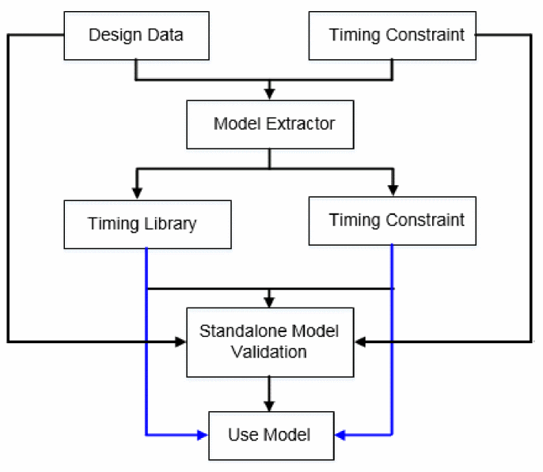

Extracted Timing Models
- Overview
- ETM Generation
- ETM Generation for MMMC Designs
- Slew Propagation Modes in Model Extraction
- Basic Elements of Timing Model Extraction
- Secondary Load Dependent Networks
- Characterization Point Selection
- Constraint Generation during Model Extraction
- Parallel Arcs in ETM
- Latency Arcs Modeling
- Latch-Based Model Extraction
- Model Extraction in AOCV Mode
- Stage Weight Modeling in ETM
- AOCV Derating Mode
- PG Pin Modeling During Extraction
- Extracted Timing Models with Noise (SI) Effect
- Extracted Timing Models with SOCV
- Merging Timing Models
- Limitations of ETM
- Validation of Generated ETM
- Auto-Validation of ETM
- ETM Extremity Validation
- Limitations/Implications of EV-ETM
- Ability to Check Timing Models
Overview
Timing model extraction is the process of extracting the interface timing of hierarchical blocks into a timing library. Typically, model extraction has the following advantages:
- Reduces the memory requirements by generation of extraction timing models (ETMs) for respective blocks, which may be huge in size.
- Reduces the static timing analysis (STA) run time.
- Hides the proprietary implementation details of the block from a third-party.
The write_timing_model command is used to build a timing model (.lib) of a digital block to be used with a timing analyzer. The extraction of the "actual" timing context for a lower-level module instance is required for achieving timing convergence with large hierarchical design databases. The timing analyzer has the following advantages while analyzing timing extracted models instead of a complete block design:
- Provides the timing engine capability to allow for quick derivation of a module's timing context.
- Extracts data correctly across multiple clock domains.
- Allows merging of various models in various modes for their respective blocks.
You can start with model extraction with the following data loaded in the software:
- Design netlist
- Timing libraries
- Block context (constraints, such as, clocks, path exceptions, operating conditions etc.)
- RC data of the nets
The following diagram illustrates this flow:

Return to top